Azienda - Gestione Personale e Distribuzione Teste
Gestione del Personale
Cliccando sulla voce di menù “Azienda” è possibile visualizzare la voce “Gestione del personale”, tramite la quale è visibile lo storico di tutto il personale che lavora o che ha lavorato per ATS Milano.
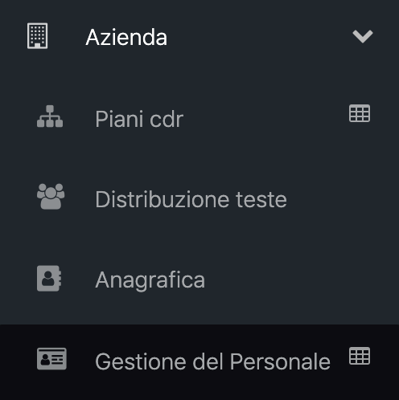
All’interno di questa pagina è possibile eseguire la ricerca di una specifica persona tramite nome o cognome o matricola, utilizzando l’apposita sezione posta in alto.
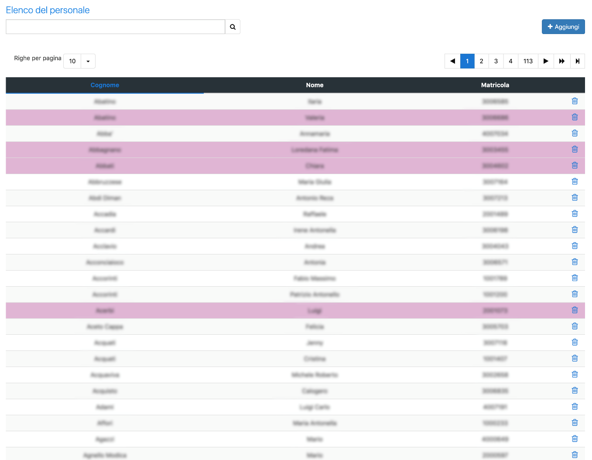
Cliccando sul pulsante “Aggiungi” verrà aperta una pagina dove è possibile inserire una nuova risorsa umana, compilando:
- Numero di matricola, univoco tra tutte le risorse umane
- Cognome
- Nome
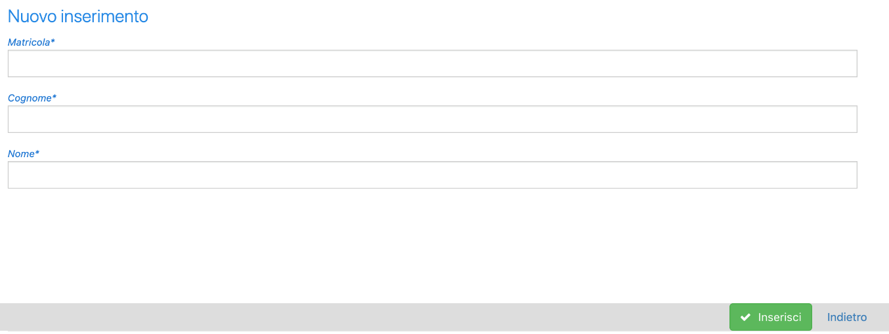
Nella tabella presente all’interno della pagina principale vengono elencate tutte le risorse umane attuali e passate dell’ATS Milano. Le righe rosa rappresentano il personale attualmente non assegnato ad alcun Centro di Costo.
Per ogni riga sono visualizzabili:
- Cognome
- Nome
- Matricola
- Pulsante per cancellare la risorsa dall’elenco
Cliccando sulla singola riga verrà aperta la pagina di dettaglio della persona, dove in alto vengono riportate nuovamente le informazioni di riepilogo: matricola, cognome e nome.
Sotto è presente la tabella riguardante lo storico delle allocazioni su CDC, dove sono visibili i CDC presso i quali la risorsa presta o ha prestato servizio.
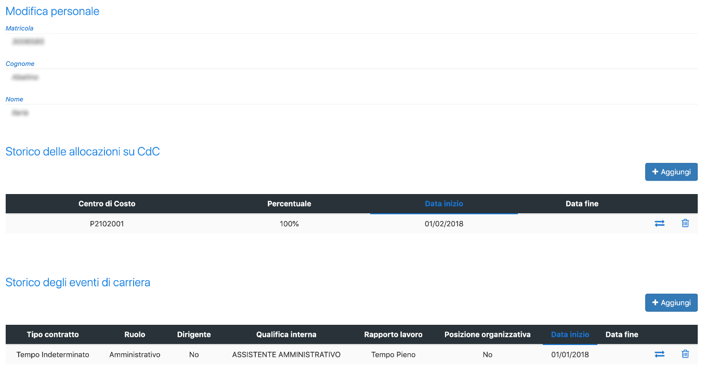
Attraverso il pulsante “Aggiungi” è possibile aggiungere una nuova allocazione presso un Centro di costo, inserendo:
- Il codice del CDC presso cui sarà allocato
- La percentuale di lavoro di assegnazione del dipendente al nuovo CDC
- La data di inizio della allocazione
- La data di fine della allocazione
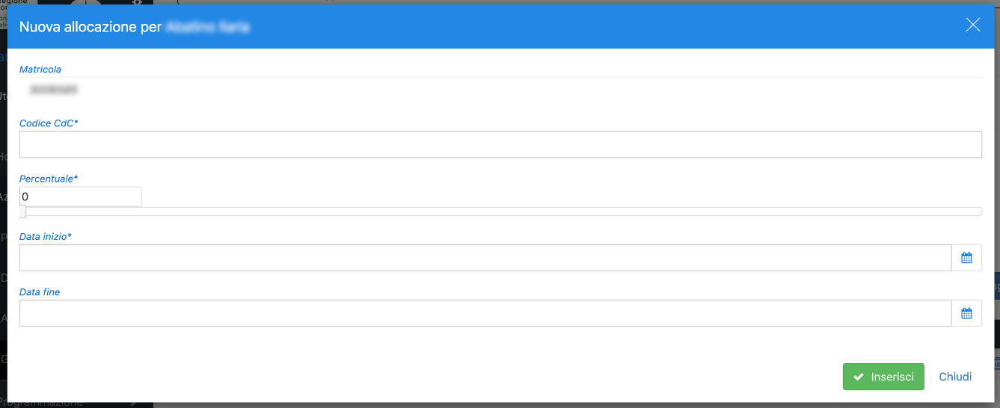
Una volta compilati i campi, per salvare, basterà cliccare su “Inserisci”, in alternativa per annullare, sul pulsante “Chiudi”.
Tornando alla pagina precedente, all’interno della tabella delle allocazioni CDC per ogni riga vengono riportati:
- Il codice identificativo del Centro di costo
- La percentuale di tempo che la risorsa dedica a quello specifico CDC
- La data di inizio dell’allocazione
- La data di fine dell’allocazione
- Il pulsante per cambiare l’allocazione della risorsa
- Il pulsante per l’eliminazione dell’allocazione dalla risorsa.
Cliccando sulla singola riga verrà aperta la finestra di modifica, dove verrà visualizzato il numero di matricola della risorsa e il codice del CDC a cui è assegnata. Sotto sarà possibile modificare la percentuale di tempo lavorativo che la risorsa dedica a quel CDC e la data di fine. Invece, la data di inizio non sarà modificabile.
Cliccando su “Aggiorna” verranno salvati i dati; attraverso il pulsante “Elimina” verrà cancellata la riga; mentre con il pulsante “Chiudi” si chiuderà la finestra, annullando l’operazione.
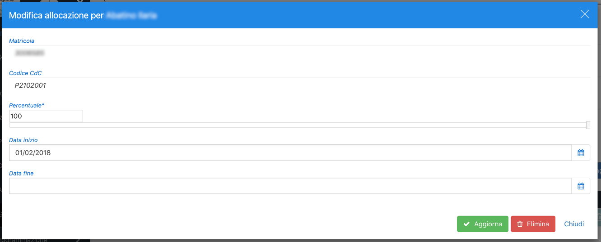
Sempre all’interno dello storico delle allocazioni su CDC, utilizzando il pulsante di cambio allocazione (due frecce) verrà aperta una finestra dove sarà possibile inserire una nuova allocazione inserendo:
- Codice CDC
- Percentuale di tempo che la risorsa dedica a quel CDC
- Data di inizio dell’allocazione
- Data di fine dell’allocazione
In automatico l’allocazione precedente presenterà una data di fine corrispondente al giorno prima rispetto alla data di inizio della nuova allocazione.
La tabella successiva riporta lo storico degli eventi di carriera definendo per ogni riga:
- Il tipo di contratto
- Il ruolo
- Se facente parte di un ruolo dirigenziale
- La qualifica interna
- Il tipo di rapporto lavorativo
- Se in possesso di un incarico di funzione o di una posizione organizzativa
- La data di inizio di quella qualifica
- La data di fine di quella qualifica
- Il pulsante di modifica di quell’evento di carriera
- Il pulsante di eliminazione di quell’evento di carriera
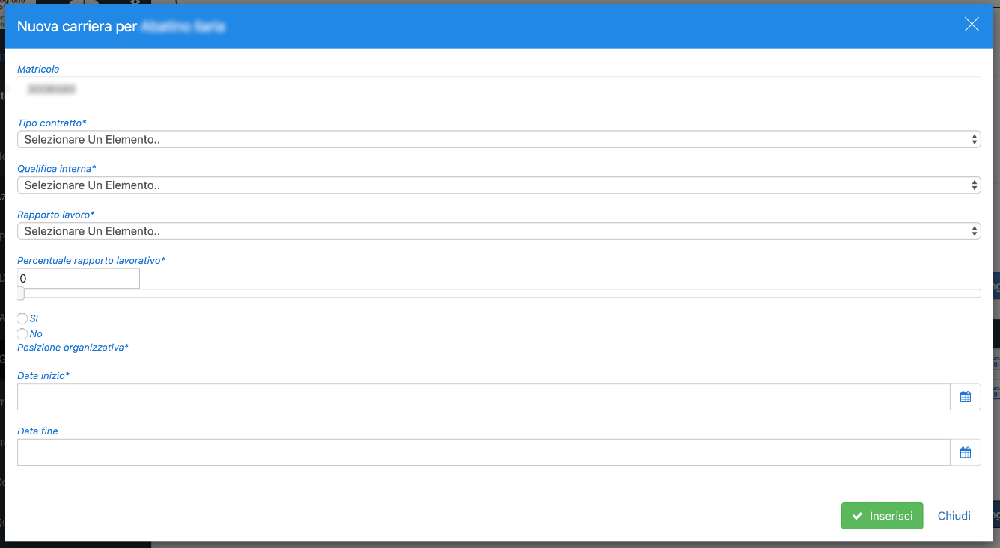
Cliccando sul pulsante “Aggiungi” è possibile inserire un nuovo evento di carriera per il dipendente selezionato; verrà quindi aperta una finestra dove sarà possibile inserire:
- Tipo di contratto
- Qualifica interna
- Rapporto di lavoro
- Percentuale di tempo che la persona dedica a quella mansione
- Se in possesso di un incarico di funzione o di una posizione organizzativa
- Data di inizio della mansione lavorativa
- Data di fine della mansione lavorativa
Una volta completato l’inserimento, attraverso il pulsante “Inserisci” sarà possibile salvare i campi ed inserire il nuovo evento. In alternativa, per annullare e tornare alla schermata precedente, cliccare su “Chiudi”.
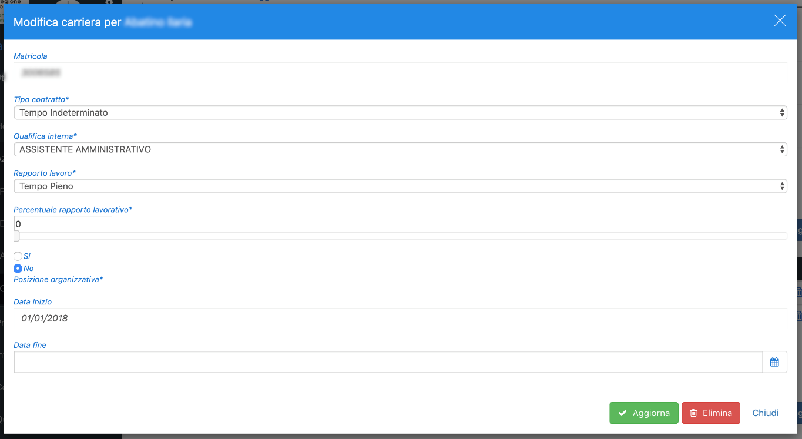
Tornati allo storico degli eventi di carriera, cliccando sulle singole righe degli eventi, è possibile modificare l'evento inserito. Una volta apportate le modifiche desiderate, cliccare sul pulsante “Aggiorna” per salvare; in caso si voglia eliminare la riga della mansione cliccare su “Elimina”, mentre per annullare l’operazione e tornare alla schermata precedente cliccare su “Chiudi”.
Configurazione Tabelle di Supporto
Cliccando sull’icona a fianco della voce di menù “Gestione del personale” sarà possibile configurare:
- Qualifica interna
- Rapporto di lavoro
- Ruolo
- Tipologia di contratto
Qualifica interna
Accedendo si visualizzerà subito la scheda per la gestione della qualifica interna.
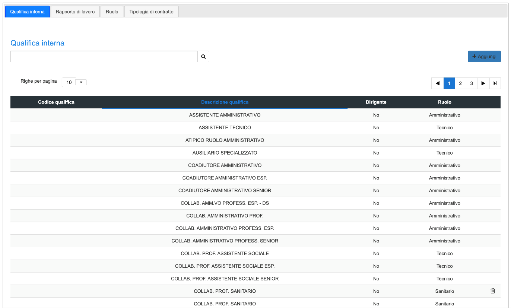
In questa scheda è visibile l’elenco di tutte le tipologie di qualifica interna esistenti. In alto attraverso l’apposito filtro di ricerca è possibile trovare la voce desiderata.
Cliccando sul pulsante “Aggiungi” verrà aperta una finestra, dove sarà possibile aggiungere una nuova tipologia di qualifica.
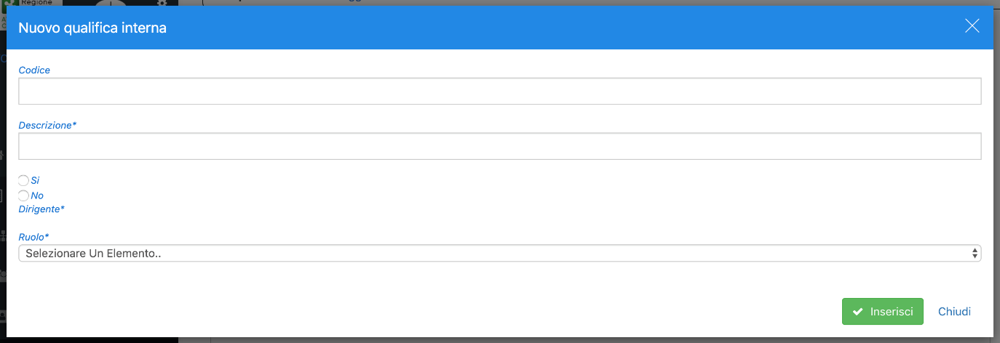
Qui sarà possibile inserire:
- Il codice corrispondente alla qualifica interna
- La descrizione della qualifica
- Se questa fa parte di un ruolo dirigenziale
- Il tipo di ruolo di appartenenza
Cliccando su “Inserisci” verranno salvati i campi inseriti, cliccare su “Chiudi” invece per annullare l’operazione.
Tornando nella pagina di gestione delle qualifiche interne, è presente la tabella con l’elenco delle qualifiche presenti, riportante il codice della qualifica, la descrizione della qualifica, se appartenente ad un ruolo dirigenziale, la tipologia di ruolo e il pulsante di eliminazione, solamente se quella tipologia di qualifica non è stata assegnata a nessun lavoratore.
Cliccando sulla singola riga verrà aperta la finestra con i dettagli.
Rapporto di lavoro
Passando alla scheda relativa alle tipologie di rapporto di lavoro, sarà possibile inserire e gestire le tipologie di rapporto di lavoro.
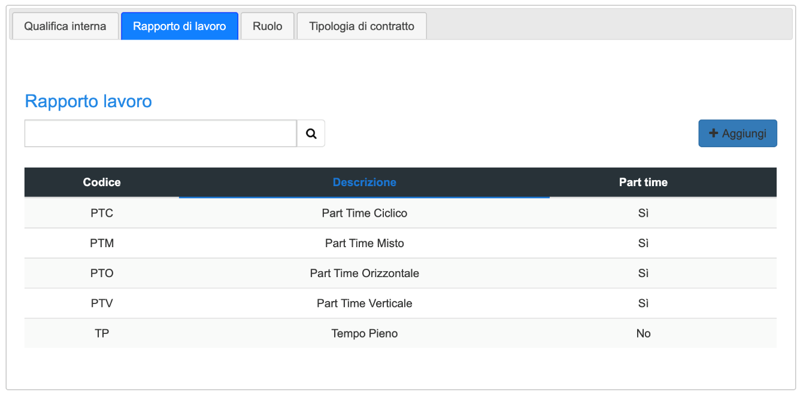
In alto è possibile eseguire una ricerca attraverso l’apposito campo di ricerca.
Attraverso il pulsante “Aggiungi” verrà aperta una finestra, con i seguenti campi da compilare:
- Codice della tipologia di rapporto di lavoro
- Descrizione
- Se fa parte della tipologia di lavoro part-time
dove sarà possibile inserire una nuova tipologia di rapporto di lavoro. Attraverso il pulsante “Inserisci” verranno salvati i campi compilati ed inserita la tipologia. Cliccare su “Chiudi” invece per annullare e tornare alla schermata precedente.
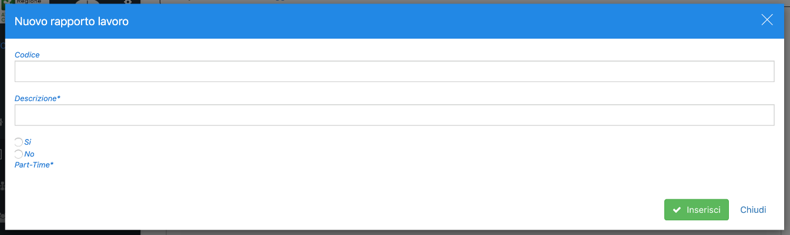
Nella tabella sottostante vengono elencate le tipologie di rapporto di lavoro con le informazioni riguardanti il codice, la descrizione, se facente parte di tipologia di lavoro part-time, e il pulsante di eliminazione della tipologia di rapporto di lavoro solo se questo non è già utilizzato.
Cliccando sulla singola riga verrà aperta la finestra con i dettagli.
Ruolo
Nella scheda relativa al ruolo è possibile inserire e gestire le tipologie di ruolo lavorativo.
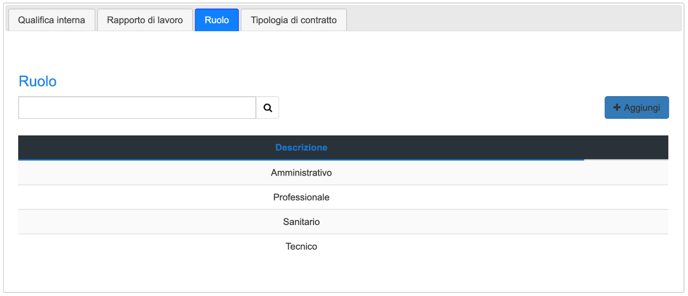
In alto è possibile eseguire una ricerca attraverso l’apposito campo di ricerca.
Cliccando sul pulsante “Aggiungi” verrà aperta una finestra, dove sarà possibile aggiungere una nuova di ruolo. Qui verrà chiesto di compilare il campo inerente la descrizione della tipologia di ruolo da inserire.
Nella tabella sottostante vengono elencate le tipologie di ruoli esistente e riportata la descrizione di riferimento. Il pulsante di eliminazione sarà visibile solamente per le tipologie di ruolo non ancora utilizzate.
Cliccando sulla singola riga verrà aperta una finestra dove sarà possibile visionare i dettagli del ruolo.
Tipologia di contratto
Passando alla scheda “Tipologia di contratto” sarà possibile inserire e gestire le tipologie di contratto di lavoro.
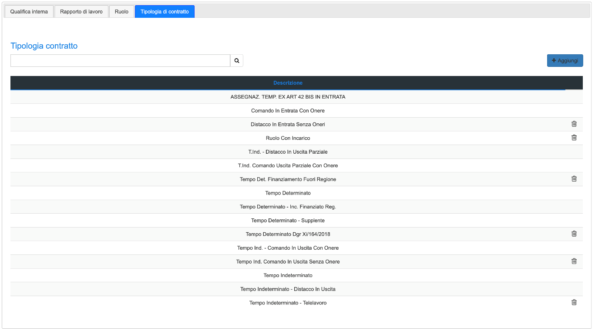
In alto è possibile eseguire una ricerca attraverso l’apposito campo di ricerca.
Cliccando sul pulsante “Aggiungi” verrà aperta una finestra, che consentirà di aggiungere una nuova tipologia di contratto. Qui verrà chiesto di compilare il campo inerente la descrizione della tipologia di contratto da inserire.
Nella tabella sottostante vengono elencate le tipologie di contratto esistente e riportata la descrizione di riferimento. Il pulsante di eliminazione sarà visibile solamente per le tipologie di contratto non ancora utilizzate.
Distribuzione Teste
Cliccando sulla voce di menù “Azienda” è possibile visualizzare la voce “Distribuzione teste”, tramite la quale è visibile l’elenco del personale che attualmente lavora per ATS Milano.
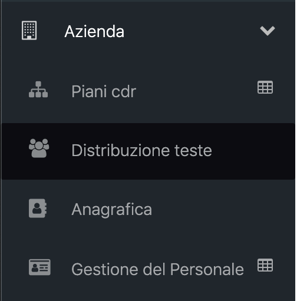
In alto alla pagina, è possibile filtrare la visualizzazione per piano organizzativo (POAS) e data di introduzione del piano.
Successivamente è possibile eseguire una ricerca del personale tramite nome o cognome o matricola, oppure scorrere all’interno della tabella utilizzando la paginazione.
All’interno della tabella sono presenti le seguenti informazioni riguardo il personale attualmente in servizio:
- Cognome
- Nome
- Numero di matricola
- CDC di afferenza, con codice del CDC, descrizione e percentuale del rapporto lavorativo.
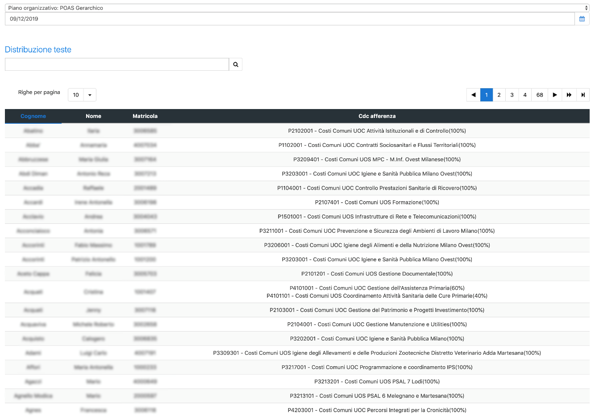
Cliccando sulla singola riga si apre la pagina con i dettagli riguardanti la gestione del personale e le possibili modifiche.